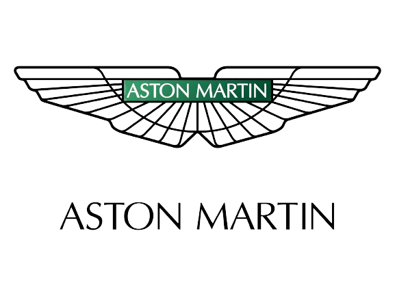
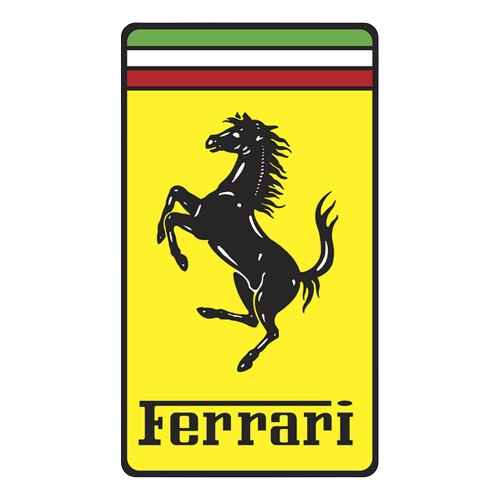

<!DOCTYPE html>
<html lang="en">
<head>
    <link rel="stylesheet" href="style.css"/>
    <meta charset="UTF-8">
    <meta name="viewport" content="width=device-width, initial-scale=1.0">
    <title>Document</title>
</head>
<body>
    
</body>
</html>

 <p class="header-img-text">Image Credit: Wikimedia Commons</p>
<a class="links" href="index.html">Back</a>
<div><h3>P10 Alpine</h3>
    
    <p>Image Credit: Wikimedia Commons</p>
    <h6>I just feel like Alpine is the new Haas this year. This is due to the fact that they have had a crisis. They have fired a significant portion of the team, the leadership changes throughout the season, the drivers hate each other and if that wasn't enough the car is a literal tractor.</h6>
    </div>
    <div><h3>P9 Sauber F1</h3>
        
        <p>Image Credit: Vector Portal</p>
        <h6>I think as Sauber is in a transition phase from Alfa Romeo to Audi they will not be that competitive until they become Audi so this is where I see them ending up as their driver line up is not the best.</h6>
    </div>
    <div>
        <h3>P8 Haas</h3>
        
        <p>Image Credit: Leo Reynolds, Flickr</p>
        <h6>I think Haas is in a stronger place this year then last year as Sauber and Alpine are looking slower than it. Which is why I have put it above them. Also this could be due to the Ferrari car being better meaning the Haas car is also a bit better.</h6>
    </div>
    <div>
    
        <h3>P7 Williams</h3>
        
        <p>Image Credt: Wikimedia Commons</p>
        <h6>I think Williams will have a simialr year to last year being the top of the lower teams or the lower of the midfield teams. This is because the performance seems to be on par with their performance last year.</h6>
    </div>
    <div>
        <h3>P6 VCARB</h3>
        
        <p>Image Credit: Wikimedia Commons</p>
        <h6>I feel like VCARB is going to be better this year then last year due to the fact that there is no Nyck De Vries situation as well as them probably getting any upgrade that Red Bull gets. Also I think they have a relativly strong driver lineup.</h6>
    </div>
    <div>
        <h3>P5 Aston Martin</h3>
        
        <p>Image Credit: paulwalker, Goodfon</p>
        <h6>I feel like the Aston Martin car is kind of in the same place they were at the end of last year. But I also think that the gap to the teams below is going to be too big for that to matter so I think they will get the same result as last year. </h6>
     </div>
     <div>
        <h3>P4 Mercedes</h3>
        
        <p>Image Credit: Wikimdeia Commons</p>
        <h6>I just feel like Mercedes is in a lot worse place compared to where they were last year. I think they may have gone a bit backwards. Also with hamilton leaving it shows a lack of faith in the team.</h6>
     </div>
     <div>
        <h3>P3 Mclaren</h3>
        
        <p>Image Credit: Wikimedia Commons</p>
        <h6>I feel like Mclaren is in the same spot they were at the end of last year so if they maintain this for the rest of the season this is probably where they will end up. Also they have a decent driver lineup.</h6>
     </div>
     <div>
        <h3>P2 Ferrari</h3>
        
        <p>Image Credit: Mike Hales, Flickr</p>
        <h6>I feel like Ferrari is going to be Red Bulls main rival this season as I think they are the only team that will stand between them and complete domination. </h6>
     </div>
     <div>
        <h3>P1 Red Bull</h3>
        
        <p>Image Credit: pcsldot, Flickr</p>
        <h6>Red Bull has the dominant car and one of if not the most dominant drivers of this era of Formula 1, this is as well as one of the best engineers in Formula 1 ever: Adrien Newey who has made the most dominant car ever. The only team that can stop them from winning every race is probably Ferrari.</h6>
    </div>
     
